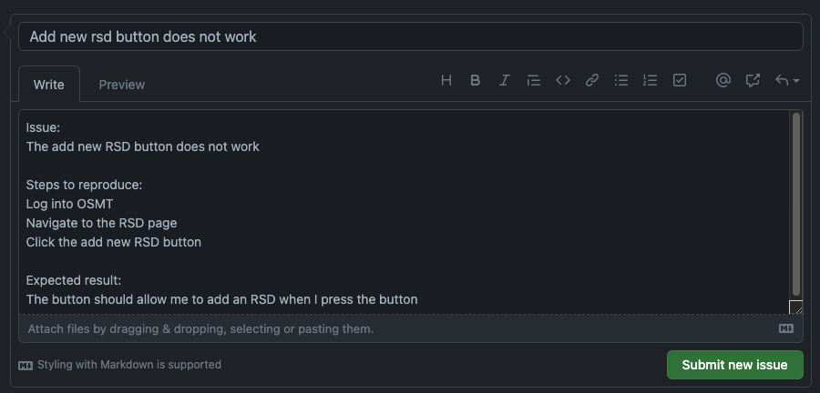

Support
OSMT support is provided by the OSMT open-source community, the Discussion Forum and GitHub documentation.
- How-To
For first time users and common scenarios, please refer to the How-To page.
- The README
The README file provides technical instructions about building, installing, and running OSMT.
- The Discussion Board
Still can't find what you're looking for? Head on over to the Discussion Board and ask your question there.
Found a Bug? Want to Request a Feature?
- Steps to submit an issue with OSMT:
- Go to the Issues page in the OSMT GitHub repo.
Github will prompt you to login or create an account if you do not have one.
- Click on them New Issue button.
- Fill out the title and body. Please put in as much information as possible. i.e. code snippet, screen shots etc.
Note that you can paste or drag-and-drop an image or screenshots/attachments right into the body. Provide steps to
reproduce the issue and what the expected result should be. Once finished, click "Submit new issue". Example:

- Issues are reviewed by maintainers on a regular basis
- OSMT is open source, so you can always attempt a fix yourself and submit a pull request.
For more information about contributing to OSMT, see our CONTRIBUTING guidelines.
Continuous engagement
We're here to serve by guiding project vision, ensuring community health and engagement, overseeing the release process, and uplifting the community.
You can also direct general questions to opensource@wgu.edu. We'd love to hear from you!